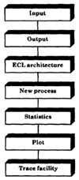
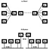

| Previous | Table of Contents | Next |
Always assume that your assumption is invalid.
—Robert F. Tatman
During the development of the simulation model, you must ensure that the model is correctly implemented and that it is representative of the real system. These two steps are called model verification and model validation, respectively. After the model development is compelete, the next two issues you will face are those of deciding how many of the initial observations should be discarded to ensure that the model has reached a steady state and how long to run the simulation. These issues are called transient removal and stopping criterion, respectively. These four issues are the main topics of this chapter.
The goodness of a simulation model is measured by the closeness of the model output to that of the real systems. Since a number of assumptions about the behavior of real systems are made in developing the model, there are two steps in measuring the goodness. The first step is whether the assumptions are reasonable, and the second step is whether the model implements those assumptions correctly. There two steps are called validation and verification, respectively. Validation is concerned with the representativeness of the assumptions, and verification is related to the correctness of the implementation. Verification can also be called debugging, that is, ensuring that the model does what it is intended to do.
Validation and verification are different concepts in that a model could be in any one of the four possible categories: invalid and unverified, invalid and verified, valid and unverified, or valid and verified. An invalid and verified model, for example, is one that correctly implements the assumptions, but the assumptions are far from reality. If the modeling and programming of a simulation model is being done by two separate persons (or teams), the modeling person would be responsible for validation and the programming person would be concerned with verification.
In the programming language literature, a number of techniques can be found for debugging. Any combination of these techniques can be used to verify the model. Some of these techniques, along with a few techniques applicable especially to simulation models, are described next.
Simulation models are large computer programs. All techniques that help develop, debug, or maintain large computer programs are also useful for simulation models. Two important techniques are modularity and top-down design.
Modularity requires that the model be structured in modules that communicate with each other via well-defined interfaces. These modules are commonly called subroutines, subprograms, procedures, and so forth. The interface consists of a number of input and output variables or data structures. Once the interface and the function of a module have been specified, it can be independently developed, debugged, and maintained. Modularity thus allows the verification of the simulation to be broken down into smaller problems of verifying the modules and their interfaces.
Top-down design consists of developing a hierarchical structure for the model such that the problem is recursively divided into a set of smaller problems. First, the model is divided into a number of modules with different functions. Each of these modules is then further subdivided into modules. The process is repeated until the modules are small enough to be easily debugged and maintained.
The following example illustrates a sample top-down modular design.

FIGURE 25.1 Layered structure of the congestion simulation model.

FIGURE 25.2 Model of two interconnected local-area networks
The model consists of seven different modules, shown in Figure 25.1. Each module consists of several procedures and builds on the functionality provided by modules below it. The lowest layer is a general-purpose trace facility useful for debugging SIMULA programs. The plot module provides a general graph-plotting facility. A set of simple statistical routines to calculate, for example, the mean and variance forms the next layer. One problem that was encountered in using SIMULA was that the time variable cannot be reset to zero. The word length of the computer prevented us from running several iterations without time overflow. The fourth layer, labeled “new process” removes this restriction. It allows each iteration to reset a “new time” variable to zero and provides its own event-scheduling routines. The four layers discussed so far are very general and are not related to the problem being simulated.
The layer labeled “ECL architecture” contains all problem-specific routines. The output layer contains all the routines to produce intermediate and final results. Finally, the main program, initialization, and parameter input routines are part of the top layer.
The model is described in Jain (1986).
Antibugging consists of including additional checks and outputs in the program that will point out the bugs, if any. For example, if the probabilities for certain events are supposed to add up to 1, the program may check this and print an error message if the sum is not within a specified tolerance limit. Another example is that of counting the entities generated and served. In the computer network simulation, for example, the model counts the number of packets sent by a number of source nodes as well as the number received by the destination nodes. The number of packets lost on the route and the packets received should equal the number of packets sent. A nonzero difference would indicate a programming error. In fact, for each entity defined in the simulation, it is good practice to have a generate entity routine that counts the number of entities generated and to have an explicit destroy entity routine that decrements the number of entities before releasing their data structure for garbage collection. The numbers are maintained in a global (common) area, which is checked at the end of the simulation to see that all entities are properly accounted for. For example, in a network simulation, packets, nodes, and connections are counted when they are generated as well as destroyed. It is very useful since small changes in the model often result in bugs that are discovered by the entity accounting routine at the end of the simulation.
| Previous | Table of Contents | Next |
){kind=link}
){kind=link}
){kind=link}
){kind=link}